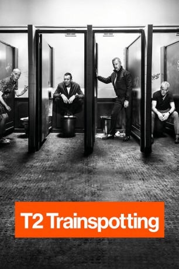

#6240 T2 Trainspotting
Auszeichnungen: 3 BAFTA-Awards gewonnen
 
 IMDB-Wertung: 7.2 / 10
IMDB-Wertung: 7.2 / 10  Tomatometer: 80
Tomatometer: 80  Metascore: 67
Metascore: 67 
Zwanzig Jahre nach den Ereignissen von „Trainspotting“ kehrt Renton (Ewan McGregor) nach Leith zurück, wo sich manches geändert hat und vieles gleich geblieben ist und wo seine alten Freunde und Bekannten, darunter Spud (Ewen Bremner), Sick Boy (Jonny Lee Miller) und Begbie (Robert Carlyle), schon auf ihn warten.
Jahr: 2017
Dauer: 117 Minuten
FSK: 16
Land: England Studio: Sony Pictures ReleasingTonspuren: DTS - ,
Untertitel: Deutsch,
Auflösung: 1080p (1920x1036) Größe: 11468 MB
Genre: Drama
Regisseur:  Danny Boyle
Danny Boyle
Drehbuch: Federico Moccia
Soundtrack:
Darsteller:
 Ewan McGregor als Renton
Ewan McGregor als Renton- Elijah Wolf als Tommy, aged 9
 Robert Carlyle als Begbie / Begbie's Father
Robert Carlyle als Begbie / Begbie's Father Steven Robertson als Stoddart
Steven Robertson als Stoddart Ewen Bremner als Spud
Ewen Bremner als Spud Shirley Henderson als Gail
Shirley Henderson als Gail- Gordon Kennedy als Tulloch
 Jonny Lee Miller als Simon
Jonny Lee Miller als Simon- Anjela Nedyalkova als Veronika
- Tereza Duskova als Tourism Girl
- Simon Weir als Jailhouse
 James Cosmo als Renton's Father
James Cosmo als Renton's Father Katie Leung als Nurse
Katie Leung als Nurse- Scot Greenan als Frank Juror
- James McElvar als Simon, aged 20
- Connor McIndoe als Renton, aged 20
- Bryan Quinn als Man in Music Video
- Irvine Welsh als Mikey Forrester
- Tom Urie als Big Bear
 John Bell als Spud, aged 20
John Bell als Spud, aged 20 Kelly Macdonald als Diane
Kelly Macdonald als Diane Eileen Nicholas als Renton's Mother
Eileen Nicholas als Renton's Mother- Michael Shaw als Tommy, aged 20
 Kevin McKidd als Tommy , archive footage
Kevin McKidd als Tommy , archive footage- Amy Manson als Woman in Club
- Logan Gillies als Simon, aged 9
- Ben Skelton als Renton, aged 9
- Aiden Haggarty als Spud, aged 9
- Daniel Smith als Begbie, aged 9
- John Kazek als Tom, Rehab Group
- Charlie Hardie als Fergus, aged 9
- Scott Aitken als Farmer
- Elek Kish als Dozo
- Lewis Gribben als Dealer
- Dominic Maccoll als Dealer
- Calum Verrecchia als Dealer
- Bradley Welsh als Doyle
- Thierry Mabonga als Security Officer Wilson
- Atta Yaqub als Medical Student
- Christopher Douglas als Chris the Oracle
- Pauline Turner als June
- Ged Hanley als Social Club Band
- Neil Thomson als Social Club Band
- Margaret Davies als Social Club Singer
- Alex Jackson als Social Club Singer
- Phil Coppola als Boxing Instructor
- Kyle Fitzpatrick als Fergus
- Lauren Lamb als Baby Dawn
- Devon Lamb als Baby Dawn
- Russell Dunsmore als Hard Guy Driver
Datei: X:\2-Dilogie(N-Z)\Trainspotting\T2 Trainspotting (2017, FSK16, 1920x1036).mkv seit 22.05.2017
Festplatte: HD Collection-2(A-Z)-3(A-M)
 Alle Filme aus Gruppe '2-Dilogie(N-Z)\Trainspotting'
Alle Filme aus Gruppe '2-Dilogie(N-Z)\Trainspotting'